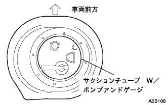
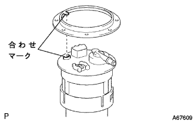
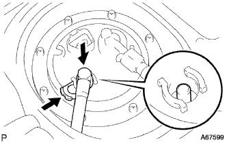

フューエル ポンプASSY 取り付け |
| 1. フユーエルサクシヨンチユーブASSY W/ポンプ&ゲージ取り付け |
|  |
新品のガスケットを介して、フユーエルサクシヨンチユーブASSY W/ポンプ&ゲージを取り付ける。
| 2. フューエルタンクベントチューブセット プレート取り付け |
|  |
フユーエルサクシヨンチユーブASSY W/ポンプ&ゲージおよびフユーエルタンクベントチユーブセツトプレートのマークを合わせ、ボルト８本でフユーエル タンク ベント チユーブセツト, プレートを取り付ける。
| 3. フューエルエミッション チューブ NO.1接続 |
パイプとコネクタの軸を合わせて[カチッ]と音がするまで挿入する。
接続後、コネクタとパイプを引っ張り、確実に組み付けられていることを確認する。
| 4. フューエルタンク メインチューブ接続 |
|  |
メインチユーブをサクシヨンプレートのプラグに差し込み、チユーブジヨイントクリツプを取り付ける。
| 5. リヤフロアサービスホール カバー取り付け |
新品のブチルテープを使用して、リヤフロアサービスホールカバーを取り付ける。
| 6. リヤシートクッションASSY取り付け（リヤシートバック一体可倒式） |
リヤシートクッションASSY後部のフックをかん合させる。
リヤシートベルトを、リヤシートクッションカバー & パッド後部のゴムバンドに通す。
 |
リヤシートクッションASSY前部のフックをかん合させる。
| 7. リヤシートバックASSY取り付け（リヤシートバック一体可倒式） |
ボルト2本をでリヤシートバックASSYを取り付ける。
 |
クリップ2個を取り付ける。
| 8. 燃料漏れ点検 |
参照